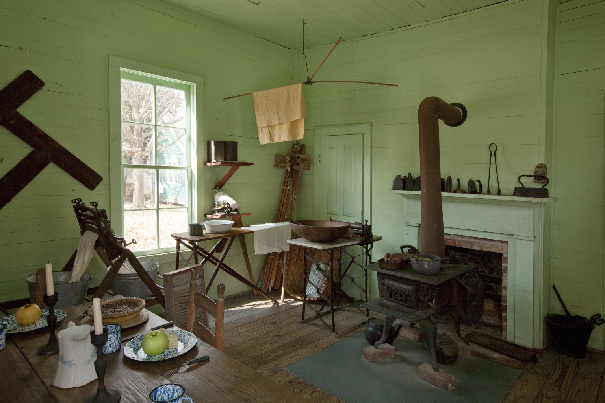

Montgomery didn't start as a single place. It began as three little frontier towns that were too close together and too stubborn to admit they needed each other. In the years right after the Creek War, when the Alabama River opened to settlement, different groups of men looked at the same red bluff and decided they were the ones who'd build the next important river city. Within about two years, three separate towns appeared almost side by side: New Philadelphia, East Alabama, and Alabama Town.
New Philadelphia came first. Andrew Dexter laid it out in 1817 and tried to give it a sense of order and purpose. He even set aside a hilltop square for a future public building because he believed the place would matter someday. That square later became the site of the Alabama State Capitol, which shows how far ahead he was thinking.
Not long after Dexter's plan took shape, George R. Clayton and his partners founded East Alabama. Their focus was business and river access. They wanted warehouses, trade, and steady traffic coming up from Mobile. Their town sat close enough to New Philadelphia that the two settlements immediately became rivals.
Downstream, General John Scott and his associates built Alabama Town. Scott was a strong personality, and his settlement leaned heavily on river commerce. Boats often stopped at his landing first, which gave Alabama Town a bit of swagger and made the competition even sharper.
By late 1819, everyone could see the problem. Three towns were trying to survive in the same spot. They duplicated services, fought for settlers, and undercut one another's businesses. It wasn't sustainable, and the leaders knew it.
The breakthrough came on December 3, 1819. New Philadelphia and East Alabama agreed to merge and chose the name Montgomery, honoring Revolutionary War General Richard Montgomery. Alabama Town held out a little longer, but it eventually joined the union too. Once the three settlements came together, the place finally had a single identity and a clear path forward.
The merger changed Montgomery's future. It became the county seat, river commerce concentrated at one landing, and the town began building the institutions that gave it stability. In less than thirty years, the community that started as three competing villages rose to become the capital of Alabama in 1846. Dexter's reserved hilltop square became the center of state government, just as he'd hoped when he first laid out his little grid on the bluff.
A piece of that founding era still stands today. Lucas's Tavern, built around 1818 - a year before Montgomery even existed - once served travelers on the Federal Road east of town and hosted the Marquis de Lafayette himself in 1825. It was later moved into Old Alabama Town, the open-air museum a few blocks from the capitol, where it stands today alongside more than fifty other historic buildings from Montgomery's first century.
Montgomery didn't stay just a county seat for long. Once the three little towns finally stopped competing and started pulling in the same direction, the place grew fast. By the mid-1840s it had become one of the most active river cities in the state, and people across Alabama were already talking about it as a natural center of government. When the legislature voted in 1846 to move the capital from Tuscaloosa, Montgomery stepped into its new role with confidence. The hilltop square Andrew Dexter had set aside back in 1817 suddenly became the most important piece of ground in the state.
And even though Montgomery wasn't the only capital Alabama ever had, it was the one that stuck in people's minds. The city's reputation kept rising through the 1850s, and by the time the country reached its breaking point, Montgomery was well known far beyond Alabama's borders. In early 1861 it briefly carried another title, one that would follow it into every history book: the first capital of the Confederacy. That moment came later, but the groundwork for it was laid decades earlier, when three frontier towns merged, found their footing, and built a city strong enough to carry the weight of a state.
Why a Capital Colony?
Montgomery does have Mayflower descendants today, and the connection is real. It just came much later. As families moved south over the course of the nineteenth and twentieth centuries, some of them carried Mayflower lines with them. They didn't arrive as a group, and they didn't shape the city's founding, but they eventually became part of Montgomery's population.
The Alabama Society of Mayflower Descendants created the Capital Colony in Montgomery on April 7, 1990, because enough members lived in the region to justify a local chapter. That tells you exactly how the connection works. It's genealogical, not historical. It's the result of generations of movement, marriages, and family lines spreading across the country.
So the story isn't that Montgomery was built by Mayflower families. The story is that Montgomery eventually became home to people whose ancestors stood on Plymouth's shore in 1620. The Pilgrim line traveled a long way over three centuries, and some of those threads ended up in the capital city of Alabama.
